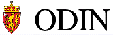

|
|
News from Norway in english. General topics.
-
- The magazine "Norway
Now", is published twice a month, covers a wide range of current
events in Norway and is intended to be of particular interest to
public authorities, companies and private individuals who wish to
keep abreast of current Norwegian business and community affairs.
Norway Now is also published as Norwegen Aktuell in German and
Nouvelles de Norvège in French.
-
- For the English speaking listeners, Radio Norway International
is broadcasting a special program, "Norway Now", every Sunday on the
following
frequencies.
-
 - Odin is the central
web-server for the Norwegian Government, the Office of the Prime
Minister and the ministries. Press-statements, newsletters and other
official publications are available.
-
-
This web site, "Norway
Online Information Service", is dedicated to serving the
international web community with cultural, political, and travel
information about Norway. This site is a service provided by the
Royal Norwegian Embassy in Washington, D.C. and the Royal Norwegian
Consulate General in New York.
-
- Norwaws is
an Electronic News Service that Provides Weekly News from Norway in
English.
I want it all!
search the
hole Yahoo on "norway"
|
![[SN Horisont]](/img/sn_horisont_liten_inv.gif)
![[Schibsted Nett AS]](/img/snikon.gif)